Type any topic. Get a living pixel island, a riddle written from the live web, a robot guide you can talk to, and friends to race to the answer.
Godot 4.5Groq LLM + RAGWhisper voiceQ-learning10-player online
A finished question bank. Once you've seen it, the "game" is over, and it can't teach a topic nobody wrote questions for.
The same level for everyone: too easy gets boring, too hard makes players quit. Nothing adapts.
No voice, no companion and no friends, just a screen of multiple choice.
Studies of AI companions in serious games report more engagement when the AI scaffolds with hints and questions instead of giving answers, and warn that learners can over-rely on an AI that solves things for them.¹ Endless Worlds follows that rule: its bot is prompted never to say the answer.
¹ e.g. SPARC/CAP multiplayer serious-game pilot (Frontiers in Computer Science); AI verbal & visual scaffolding in a serious game (arXiv 2602.08893); 90-participant human-agent collaboration study (arXiv 2605.27384).
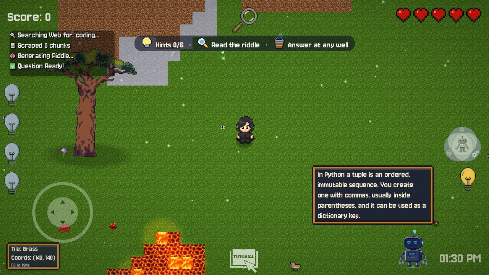
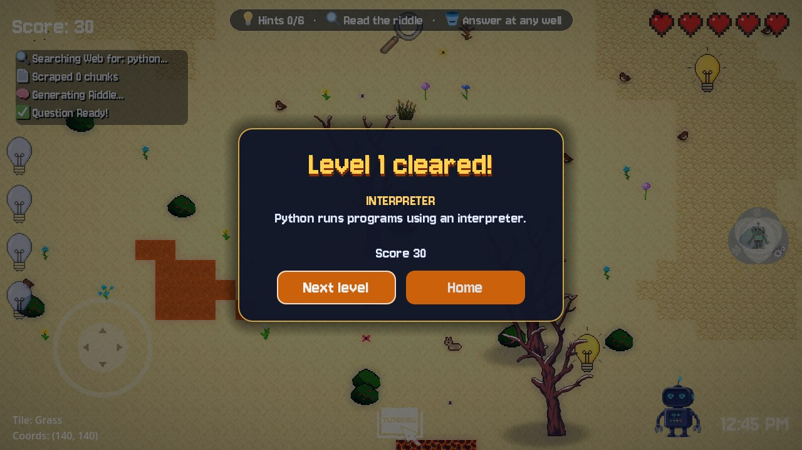
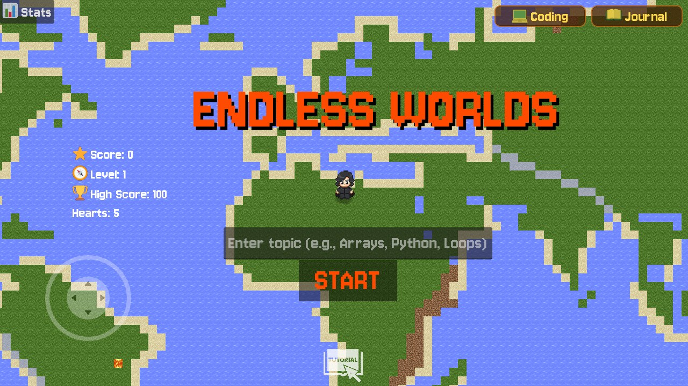
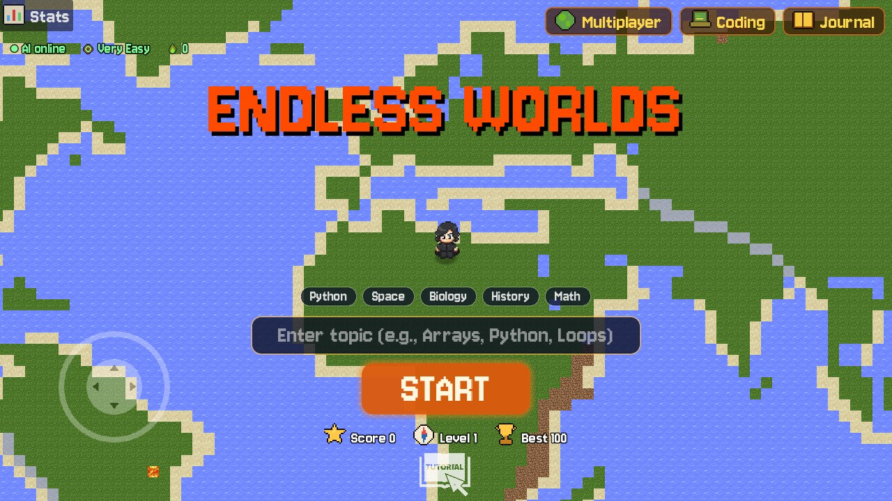
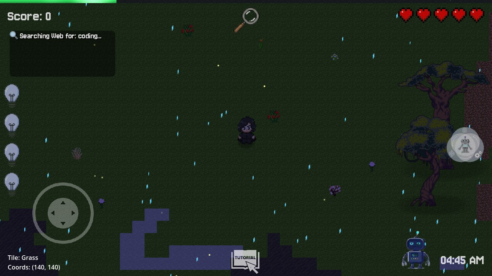
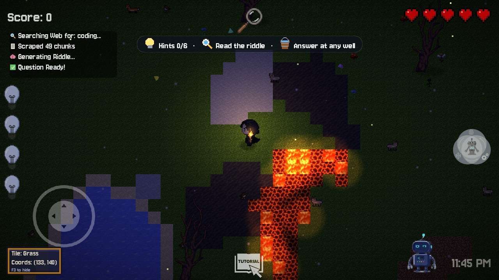
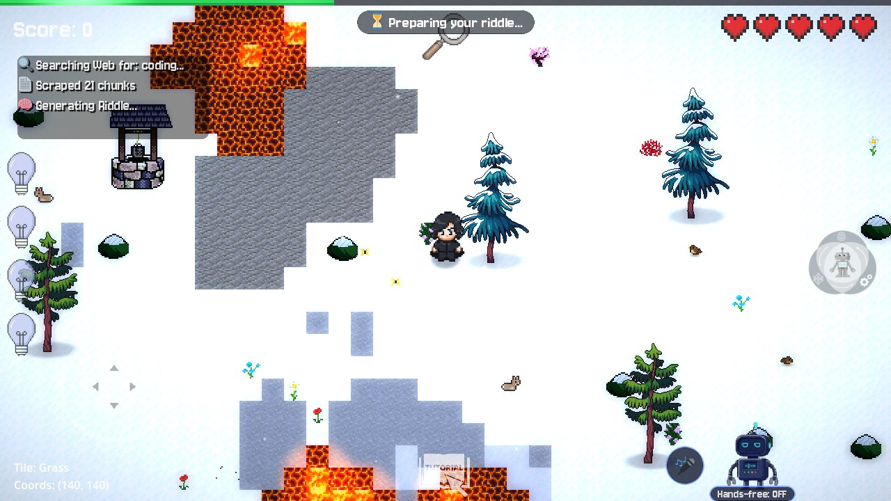
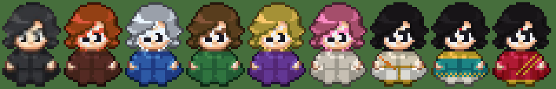
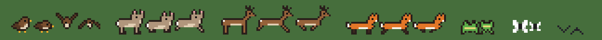
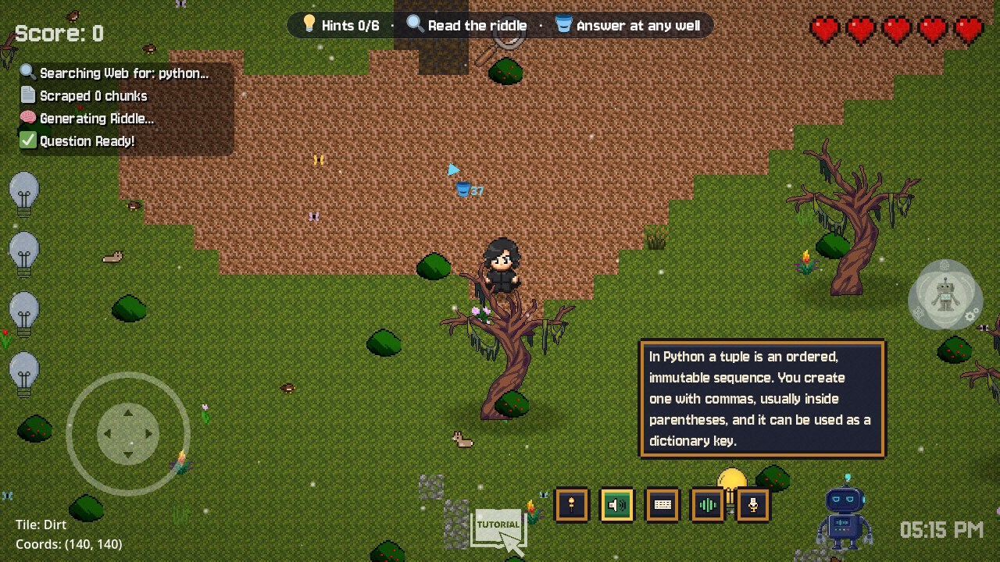
Five levels from VERY_EASY to VERY_HARD. After every game the agent updates its Q-table:
Q ← Q + 0.3 · (r + 0.5 · max Q′ − Q)
user://difficulty_rl.json across sessionsStreak bonus +10 / winLearning Journal
Classic four options from the LLM.
Type it: recall beats recognition.
Coloured letter feedback; each wrong row costs a heart.
Hit the right word as options pop out of holes.
Spin letter wheels to spell the answer.
Gold-and-blue stage, 50:50, audience poll and phone-a-friend lifelines, dramatic lock-in.
50 programming quests checked by an LLM "compiler" that explains what's right or wrong. They're picked at random and use the same hearts, score and stats.
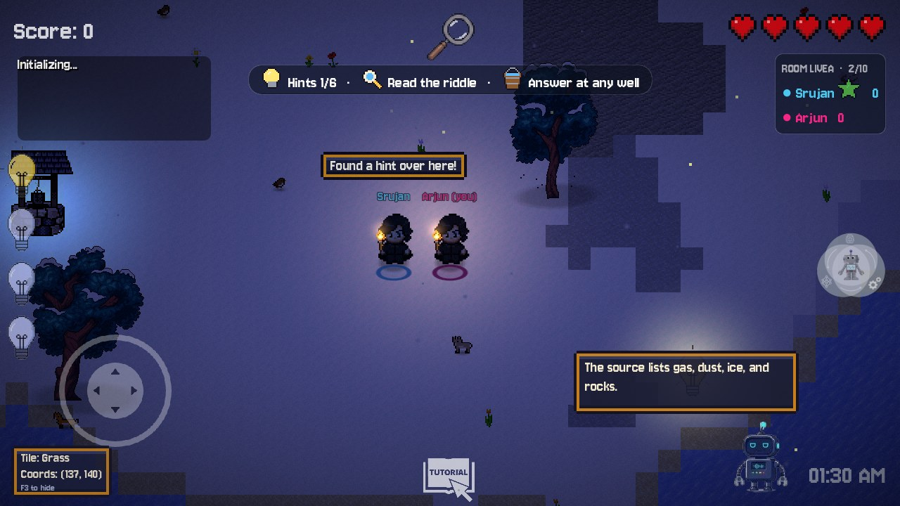
Full technical walkthrough: Multiplayer-How-It-Works.pdf
| Problem | Effect before | Fix |
|---|---|---|
| Three DifficultyRL copies sharing one save file | Feedback double-counted; copies overwrote each other | One model in Global, one update per game |
| Win recorded before +30 score / level up | Stats and best level always one win behind | Single _record_victory() in the right order |
| No HTTP timeouts; no offline path | Stuck on "Searching Web…" forever if the server was down | Timeouts + instant offline bank |
| One global vector index on the server | Two players' topics overwrote each other | Per-topic FAISS + LRU cache |
Blocking work inside async endpoints | One slow scrape froze every request | Sync endpoints in the thread pool |
| LLM output trusted blindly | Multi-word answers broke Wordle; answer missing from options | Validator + repair + 1 retry, unit-tested |
Footsteps loaded via DirAccess | Silent footsteps in exported builds | ResourceLoader.list_directory |
| Player could spawn in lava; spawn pad used the wrong biome tiles | Instant damage; mismatched tile patch | Hazard-free spawn circle in the biome's tileset |
Hard-coded localhost:8000, no CORS | Couldn't be hosted; web build couldn't reach the API | URL from .env / project / page, CORS |
EndlessWorlds-Windows.zip: one 108 MB .exe with the relay address built in. Unzip and play solo or online.
EndlessWorlds-AI-Server.zip: double-click start_server.bat. Or run the Dockerfile on Hugging Face Spaces for everyone.
build/web: single-threaded HTML5 export, so it runs on GitHub Pages or itch.io without special headers.
powershell -ExecutionPolicy Bypass -File tools\package.ps1 -Godot <godot.exe>: imports, exports Windows + Web, zips the game and the AI server. Verified: two packaged .exe copies joined a room over the live relay and shared a riddle and hints.
| Typical quiz app | Typical edu game | Endless Worlds | |
|---|---|---|---|
| Topics | fixed bank | a few hand-made levels | any topic, sourced from the live web |
| Difficulty | static | manual levels | Q-learning adapts per player |
| Help | show answer | static hint text | voice companion that nudges, never spoils |
| World | none | fixed map | new procedural island every round, living wildlife |
| Formats | 1 | 1–2 | 6 mini-games + 50 coding quests |
| Social | leaderboard | rarely | 10-player live rooms with chat |
| Offline | often fails | yes | yes: built-in bank, no hangs |
| Memory | score only | progress bar | Learning Journal of every solved riddle + fact |
relay live on workers.devWindows package ready